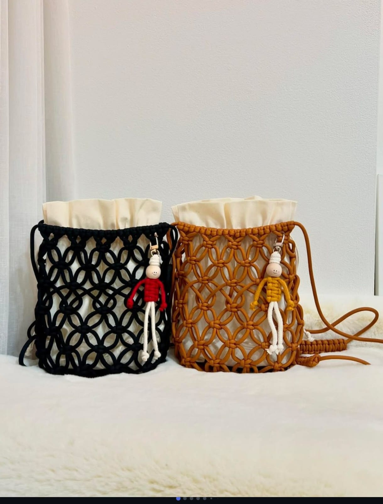
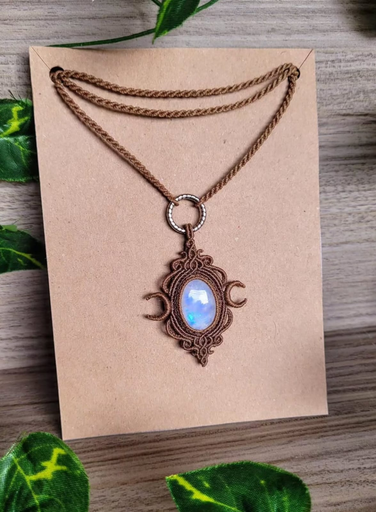
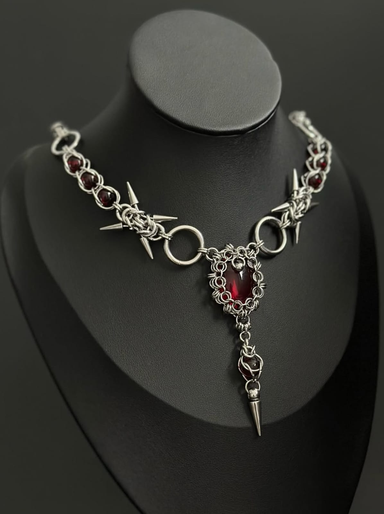
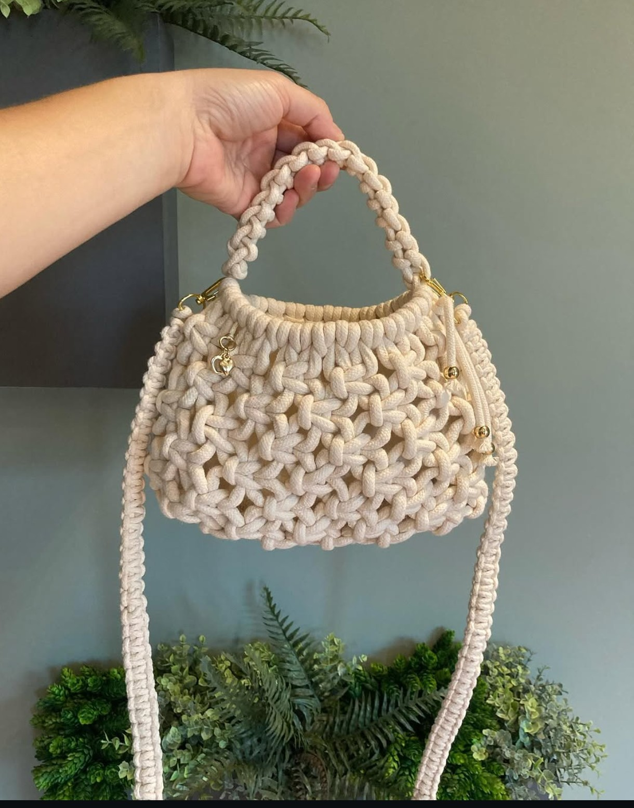
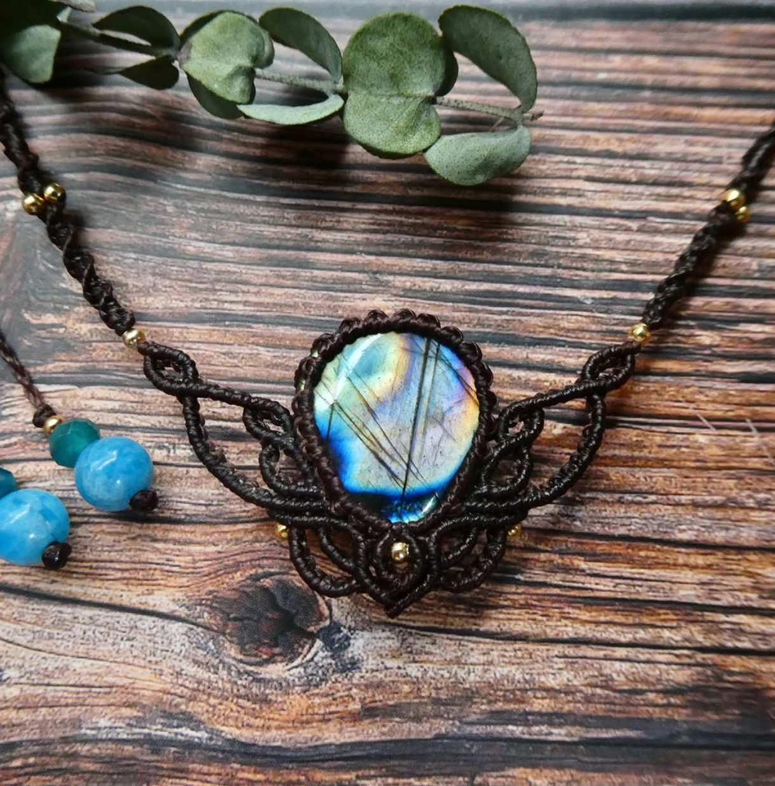
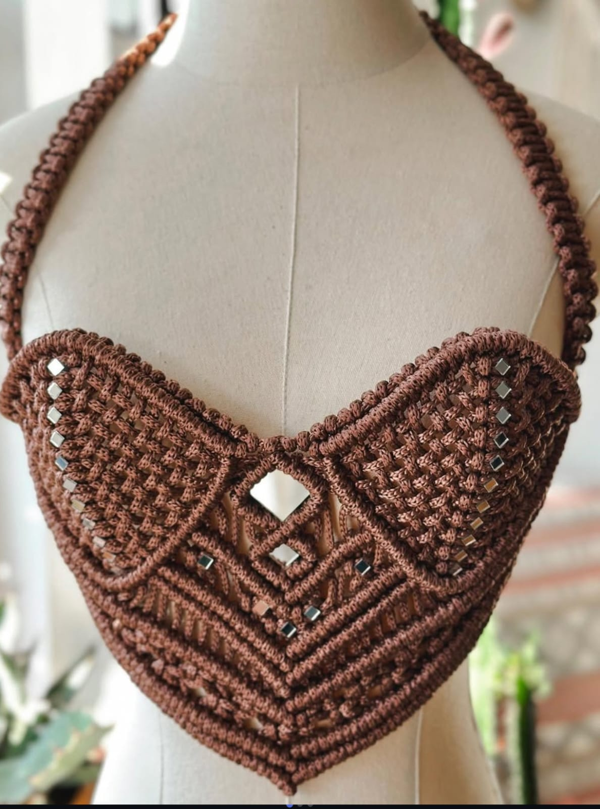
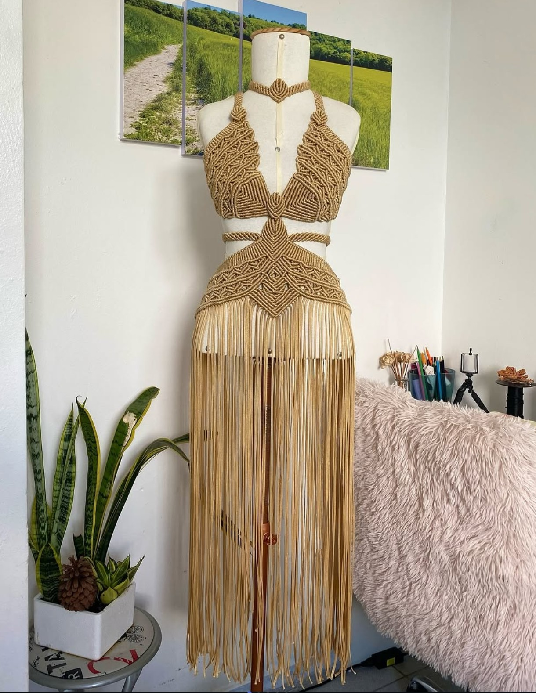
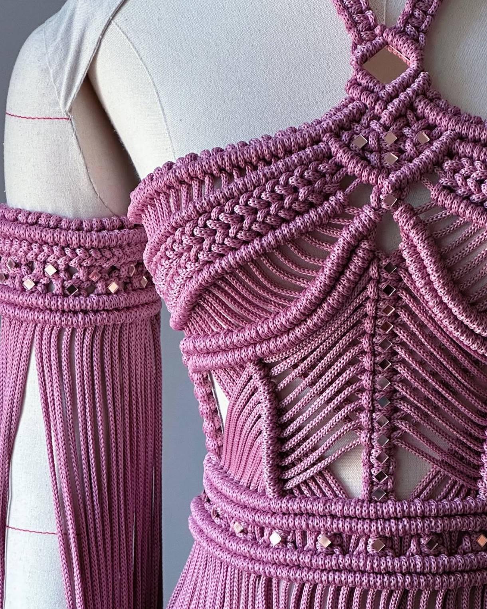

ACCESORIOS
Cartera Roja Negra
Nudo y contraste, textura artesanal.
ESTILO KUSARI · HECHO PARA DESTACAR
Vestir creaciones únicas, hechas a mano, con metal, turquesa y trama nómade. Cada pieza es irrepetible.
EXPLORAR CREACIONESPiezas pensadas para quienes prefieren vestir su propia historia.

Nudo y contraste, textura artesanal.

Piedra y cadena de inspiración industrial.

Presencia escultórica y brillo.

Detalles metálicos y trama hecha a mano.

Volumen geométrico y detalles únicos.

Cadena dorada con trama nómade.

Trama manual y silueta ligera.

Movimiento, textura y calidez artesanal.

Macramé, brillo y estructura artesanal.
Estilo Kusari nace del encuentro entre lo artesanal, lo urbano y lo inesperado. Cada pieza busca combinar materiales, colores, texturas y formas para crear algo que tenga identidad propia.
VER LA COLECCIÓN